01_KONSEPT / SAF FİKİR
Her proje bir soruyla başlar. Genç bir startup refleksiyle önce sorunun özünü ve mobil dünyadaki karşılığını netleştirir, mimariyi kurarız.
[ aşama: planlama ]
Geleceğin Mobil Sistemleri
Karmaşık işleri sadeleştiren bağımsız mobil uygulamalar ve dijital araçlar geliştiriyoruz. Büyük kütüphanelerin hantallığına kapılmadan, uzun ömürlü ve yüksek performanslı sistemlere odaklanıyoruz.
↓Her proje bir soruyla başlar. Genç bir startup refleksiyle önce sorunun özünü ve mobil dünyadaki karşılığını netleştirir, mimariyi kurarız.
[ aşama: planlama ]İhtiyacımız olmayan hiçbir hazır aracı uygulamalarımıza eklemiyoruz. Sıfır bağımlılık (Zero-dependency) prensibiyle, her satırı hız ve pil tasarrufu odaklı yazıyoruz.
[ altyapı: saf_kod ]Fikirleri hızla çalışan mobil prototiplere dönüştürürüz. Deneysel yaklaşımlarla arayüzü ve performansı en yalın hale getirene kadar optimize ederiz.
[ sürüm: test_aşamasında ]Stüdyonun felsefesinin ve minimalist web çekirdeğinin kurulması
[ TAMAMLANDI ]Deneysel mobil arayüzlerin ve batarya dostu mimarilerin prototiplenmesi
[ SÜREÇTE ]İlk bağımsız mobil araçların App Store ve Google Play üzerinde yayınlanması
[ PLANLANIYOR ]Önce ihtiyacı anlamaya çalışırız. Ardından işe yarayan bir çözüm geliştirir, nasıl çalıştığımızı açıkça paylaşırız.
Karmaşık günlük işleri akıllı telefonlarda saniyeler içinde çözen minimalist mobil uygulamalar.
Ekranı gereksiz buton, reklam veya şişirilmiş animasyonlarla doldurmayan; doğrudan çözüme odaklanan arayüzler.
Telefonun işlemcisini yormayan ve bataryayı sömürmeyen optimize edilmiş sistemler.
Temiz, kütüphanesiz ve hızlı mantık yapısı.
Esnek ve her ekrana kusursuz oturan brütalist tasarımlar.
Arka planda uygulamalarımızı besleyen, sunucuyu yormayan veri mimarisi.
Mobil platformlar için optimize edilmiş mantık modelleri.
Hazır kütüphanelerin hantallığından kaçıp uygulama boyutunu düşük tutuyoruz.
İnternet kotasını ve cihaz belleğini koruyan akıllı algoritmalar geliştiriyoruz.
Yapay zekâ üretimi genel şablonlara yaslanmadan, her satırı düşünerek saf kod yazıyoruz.
Bir startup fikriniz mi var, saf kod felsefesini mi tartışmak istiyorsunuz yoksa sadece selam mı vermek istiyorsunuz? Doğrudan kurucuya ulaşın.
[ FORM: AŞAĞIDA ] ↓[ FORM: SAĞDA ] →